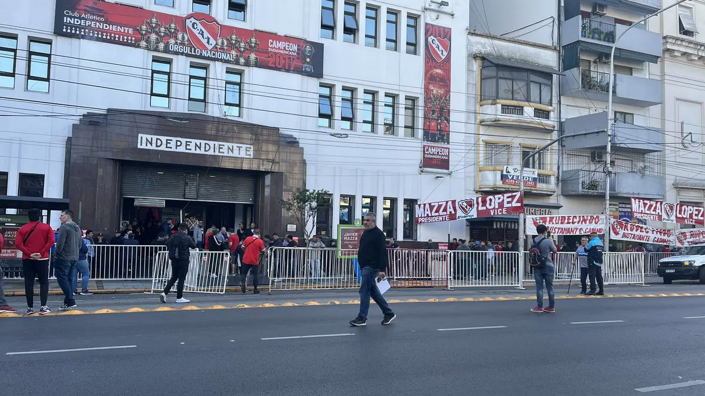

Independiente volvio a ganar
El pibe de 18 años que había errado el penal por Copa Argentina tuvo su redención inmediata al ser el protagonista del quinto triunfo de Independiente en el torneo local. Fue el mejor ante Arsenal y demostró ser una gran variante. El fútbol a veces puede ser muy injusto. Pero, en seguida, puede dar otra chance para intentarlo una vez más. Si lo sabrá el pibe Nicolás Vallejo, que venía de pasarla mal por haber fallado su penal en la definición con Talleres por la Copa Argentina y en la noche del sábado en Sarandí pudo tener su inmediata revancha: marcó el gol del triunfo. De todos modos, para él esa no fue la mejor noticia. Este chaqueño de 18 años demostró además que puede ser una muy buena alternativa en el ataque. Dio asistencias, comandó contraataques y siempre generó peligro
Elecciones historicas en independiente
Alrededor de 16 mil personas -récord en la historia del Club- votaron a las próximas autoridades del Rey de Copas. El trinomio de la lista Unidad Independiente encabezado por Fabián Doman ganó con el 72% de los votos. Luego de varios idas y vueltas judiciales, se pudieron celebrar las elecciones en Independiente y la concurrencia fue masiva en una jornada histórica. Si bien estaba estipulado que el acto eleccionario se realizara entre las 9 y las 18, se terminó extendiendo debido a la gran cantidad de socios que se acercaron a votar. Antes de la apertura de la Sede de Mitre 470 ya había varias manzanas de cola para ingresar. Durante todo el domingo hubo entre ocho y quince cuadras de fila, de manera ininterrumpida. La Junta Electoral decidió, en conformidad con las listas de Unidad Independiente, Gente de Independiente y Agrupación Independiente, extender el horario una hora más. Así y todo, desgraciadamente quedó una buena masa societaria que no llegó a alcanzar la Sede antes del horario de corte, a las 19 hs. El recuento fue rápido y sin inconvenientes, al igual que el resto de la jornada. Rápidamnte se supo que el trinomio de Unidad Independiente, de Fabián Doman, Juan Marconi y Néstor Grindetti había obtenido el 72% de los votos, contra el 15% de Gente de Independiente y el 12% de Agrupación Independiente. Le deseamos lo mejor a las nuevas autoridades, ya que el buen destino de ellos será la felicidad de todo el pueblo Rojo. También agradecemos y felicitamos a todos los que fueron parte de este día histórico, a todas las agrupaciones, empleados del Club, fiscales, autoridades de mesa y a los socios que se acercaron a votar. En las próximas horas se definirá cuándo se realizará la ceremonia de asunción de la nueva Comisión Directiva.
